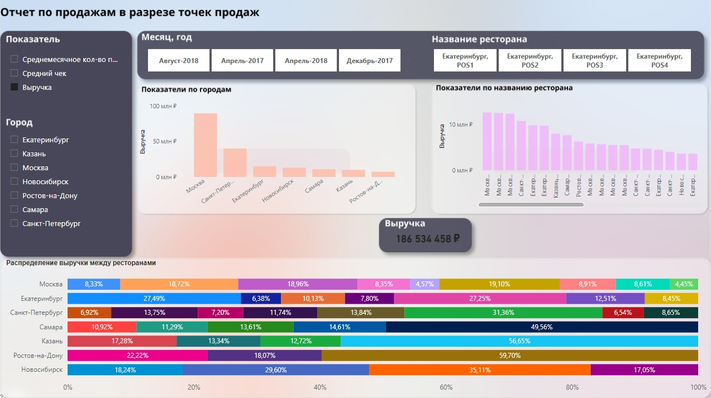
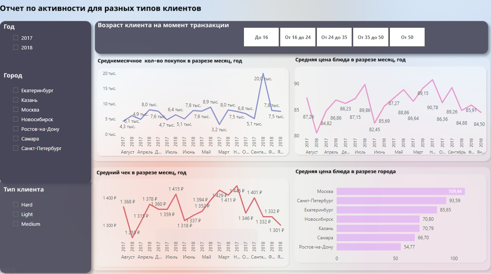

Оценка результатов двухлетней программы лояльности, устанавливающей индивидуальные цены для каждого участника на основе разнородных факторов, сети бургерных "Красти краб".
Цель проекта - на основе предоставленных данных требуется построить отчет в Power BI в соответствии с требованиями, описанными ниже.
Следующие требования:
- С описанием задачи, данных и всеми отчетами, которые необходимо получить можно ознакомиться по следуещей ссылке.
- Исходные данные содержатся в двух файлах: файл "Клиенты", который содержит данные об участниках программы, и файл "Продажи", который содержит данные о продажах.
Общий ход решения:
- Определение структуры модели.
- Формирование запросов к исходным данным и их, данных, обработка.
- Создание календаря.
- Создание связей.
- Создание вычисляемых столбцов для измерений, отсутствующих в исходных данных.
- Создание мер для вычисления показателей.
- Создание Создание отчетов.
Работа была выполнена с помощью инструментов Power BI: Power Query, Power Pivot, Power View и Figma. Подробную информацию по проекту и дашборты можно посмотреть ниже.
Работу над данном проектом я начала с подготовки данных. Определила структуру модели, из каких таблиц она будет состоять, задала связи таблиц, посчитала меры, столбцы, и сделала визуализации.
Даны были два диапозона данных: "Продажи" и "Клиенты". В таблице "Продаж" есть описание событий и объектов, поэтому вывела отдельно из этой большой таблицы отдельные справочники: "Рестораны", "Блюда" и таблица событий "Продажи". Из таблиц были удалены дубликаты. На этапе Query из цены блюда извлекла НДС и создала пустую таблицу для мер. На этапе анализа произвела разбивку пользователей по возрасту и типу их поведения (в DAX), также создала таблицу "Календарь".
Таблицу "Календарь" связала с датами транзакций из таблицы "Продажи". Календарь будет охватывать только даты продаж. Добавила в календарь столбцы "Год", "Месяц", "Год-месяц", "Номер года-месяца" (для правильной сортировки ). Номер года-месяца может создавать по любому алгоритму. Главное, чтобы каждому значению в столбце "Год-месяц" соответствовало одно и только одно значение в столбце "Номер года-месяца". Самая простая формула: [Номер года]*100 + [Номер месяца].
Так как по условию нужно создать классификацию клиентов по возрасту на момент сделки, то это не свойство покупателя, а свойство сделки, которые описаны в таблице "Продажи". Следовательно, создала столбец, который разбивает всех клиентов по возрастам, в таблице "Продажи". Для этого с помощью функции YEARFRAC (доля года) вычислила число лет между датой продажи и датой рождения клиента. На основе полученного значения происходит отнесение клиента к той или иной группе.
Создание мер:
- [Число уникальных покупателей], как число уникальных значений в столбце 'Продажи'[Номер участника].
- [Число покупок (транзакций)], как число уникальных значений в столбце 'Продажи'[ID транзакции].
- [Выручка] (продажи), как сумма произведений кол-ва на цену блюда.
- [Средний чек], как отношение выручки к числу покупок.
- [Среднемесячное кол-во покупок (транзакций)], как отношение числа покупок к числу уникальных пар "год-месяц" в календаре.
- [Средняя цена], как отношение выручки к числу проданных товаров.
Посчитав все необходимые меры, создала отчет с визуализациями из трех страниц, представленными ниже.
Отчет 1: общий отчет об участниках программы.
Содержит следующие визуальные элементы:
- Четыре карточки, которые выводят расчет 4-х мер.
- Два среза с возможностью выбора периода вступления в программу (месяц-год) и города.
- Фон был подготовлен с помощью Figma и загружен в качестве холста.
При выборе города или периода (месяц-год) происходит перерасчет всех 4-х мер: Выручка, Средний чек, Количество уникальных покупателей, Количество покупок.
Отчет 2: отчет по продажам в разрезе точек продаж.
Содержит следующие визуальные элементы:
- Нормированная линейчатая диаграмма, которая показывает распределение выручки между ресторанами.
- Карточка, в которой выводится мера Выручки.
- Срез расчета трех показателей: Среднемесячное кол-во покупок (транзакций), Средний чек, Выручка, при выборе которых выводится выбранный Показатель на двух гистограммах с группировкой по городам и по названию ресторана.
- Срез по городам, срез по дате (месяц-год) и названию ресторана.
- Фон был подготовлен с помощью Figma и загружен в качестве холста.
Отчет 3: отчет по активности для разных типов клиентов.
Содержит следующие визуальные элементы:
- Четыре среза с возможностью выбора Типа клиента, Города, Года и Возраста клиента на момент транзакции.
- Три диаграммы с областями, показывающие среднемесячное количество покупок, среднюю цену блюда и средний чек в разрезе месяц, год.
- Линейчатая диаграмма с группировкой, отражающая среднюю цену блюда в разрезе города.
- Фон был подготовлен с помощью Figma и загружен в качестве холста.
Спасибо за ваше внимание и интерес к моему проекту!
Вопросы и комментарии, пожалуйста, пишите на почту sabrina.agapova86@yandex.ru. Обращайтесь, если заинтересовала полная версия исследования и дашбортов.